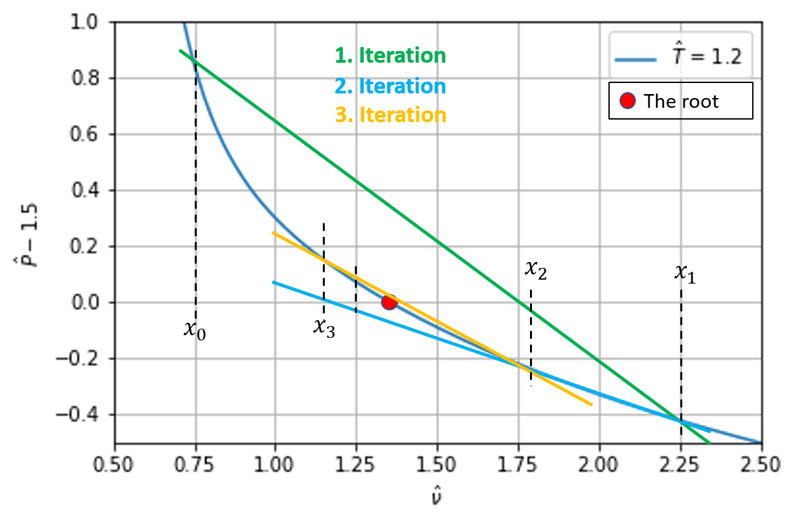

Solving non linear systems
University of Stavanger
Oct 27, 2020
Table of contents
Nonlinear equations
Example: van der Waals equation of state
Exercise 1: van der Waal EOS and CO$_2$
Fixed-point iteration
Exercise 2: Implement the fixed point iteration
Exercise 3: Finding the molar volume from the van der Waal EOS by fixed point iteration
When do the fixed point method fail?
What to do when the fixed point method fail
Exercise 4: Solve \( x=e^{1-x^2} \) using fixed point iteration
Rate of convergence
The bisection method
Rate of convergence
Newtons method
Rate of convergence
Exercise 5: Compare Newtons, Bisection and the Fixed Point method
Secant method
Rate of convergence
Newton Rapson method
Gradient Descent
Exercise 6: Gradient descent solution of linear regression
Other Useful Methods
References
In this chapter we will cover some theory related to the solution of nonlinear equations, and introduce the most used methods. A nonlinear problem is represented as a single equation or a system of equations, where the response is not changing proportionally to the input. Almost all physical systems are nonlinear, and one frequent use of the methods presented in this chapter is to determine model parameters by matching a nonlinear model to data.
Numerical methods that is guaranteed to find a solution (if it exists) are called closed methods, and open other vise. In many cases the closed methods requires more iterations for well behaved functions than the open methods. For one dimensional problems we will cover: fixed point iteration, bisection, Newton's method, and the secant method. For multidimensional problems we will cover Newton-Rapson method, which is a direct extension of Newton's method in one dimension, and the steepest decent. The main challenge is that there are (usually) more than one solution, the solution that you want for a specific problem is usually dictated by the underlying physics. If computational speed is not an issue, the method of choice is usually the bisection method. It is guaranteed to give an answer, but it might be slow. If speed is an issue, usually Newton's or the secant method will be the fastest (but it depends on the starting point). The secant method is sometimes preferred if the derivative of the function is costly to evaluate. Brents method is a method that combine the secant and bisection method (not covered), and is guaranteed to find a solution if the root is bracketed.
In many practical, engineering, applications one usually implements some of the methods described below directly inside functions. This is because it is usually faster than calling a separate all purpose nonlinear solver, and that one usually has a very good idea of what a good starting point for the nonlinear solver is.
Nonlinear equations
A nonlinear equation is simply an equation that is not linear. That means that when the variables changes the response is not changing proportional to the values of the variables. Solving a nonlinear equation always proceeds by iterations, we start with one or several initial guesses and then search for the solution. In many cases we do not know beforehand if the equation actually has a solution, or multiple solutions. An example of a nonlinear problem is: $$ \begin{equation} e^{-x}=x^2. \tag{1} \end{equation} $$ Traditionally one collect all the terms on one side, to solve an equation of the form $$ \begin{equation} f(x)=x^2-e^{-x}=0. \tag{2} \end{equation} $$ In figure 1, the solution is shown graphically. Note that in one case the solution is when the graph of \( e^{-x} \), and \( x^2 \) intersect, whereas in the other case the root is located when \( x^2-e^{-x} \) intersect the $x-$axis.
Figure 1: Notice that the root is located at the same place (\( x=0.703467417 \))

In the case of more than one unknown, or a set of equations that must be satisfied simultaneously, equation (2) is replaced with a vector equation $$ \begin{equation} \mathbf{f}(\mathbf{x})=\mathbf{0}. \tag{3} \end{equation} $$ Although this equation looks quite similar to equation (2), this equation is much harder to solve. The only methods we will cover is the Newton Rapson method, which is a very good method if a good starting point is given. If you have a multidimensional problem, the advice is to try Newton-Raphson, if this method fails you need to try more advanced method, see e.g. [1].
Example: van der Waals equation of state
Before we begin with the numerical algorithms, let us consider an example: the van der Waals equation of state. The purpose is to illustrate some of the typical challenges. You are probably familiar with the ideal gas law: $$ \begin{equation} P\nu=R_gT, \tag{4} \end{equation} $$ where \( \nu=V/n \) is the molar volume of the gas, \( P \) is the pressure, \( V \) is the volume, \( T \) is the temperature, \( n \) is the number of moles of the gas, and \( R_g \) is the ideal gas constant. This equation is an example of an equation of state (EOS), it relates \( P \), \( T \), and \( \nu \). Thus if we know the pressure and temperature of the gas, we can calculate \( \nu \). Equation (4) assumes that there are no interactions between the molecules in the gas. Clearly, this is too simplistic, and because of this one normally uses an EOS that better reflect the physical properties of the substance. A very famous EOS is the van der Waal EOS, which is a slight modification of equation (4): $$ \begin{equation} \left(P+\frac{a}{\nu^2}\right)\left(\nu-b\right)=R_gT. \tag{5} \end{equation} $$ \( a \) and \( b \) are material constants that needs to be determined experimentally. This equation is not used in industrial design, but most equations used in practice are based on equation (5). Multiplying equation (5) with \( \nu^2 \), we get a non linear equation that is cubic in the molar volume. It turns out that cubic EOS are a class of equations that are quite successful in modeling the behavior of real systems [2]. However equation (5) is a good starting point for more complex and realistic equations.It is common practice to rescale EOS with respect to the critical point. At the critical point we have [ref]: $$ \begin{align} \left.\frac{\partial P}{\partial \nu}\right|_{T_c,P_c} &=0 \tag{6} \\ \left.\frac{\partial^2 P}{\partial \nu^2}\right|_{T_c,P_c} &=0 \tag{7} \end{align} $$ From equation (6), (7), and (5), it follows: $$ \begin{equation} \nu_c=3b\quad,P_c=\frac{a}{27b^2}\quad,R_gT_c=\frac{8a}{27b^2}. \tag{8} \end{equation} $$ Inserting these equations into equation (5), and defining the reduced quantities \( \hat{P}=P/P_c \), \( \hat{T}=T/T_c \), \( \hat{\nu}=\nu/\nu_c \), we get $$ \begin{equation} \left(\hat{P}+\frac{3}{\hat{\nu}^2}\right)\left(3\hat{\nu}-1\right)=8\hat{T}. \tag{9} \end{equation} $$
Figure 2: van der Waal isotherms.

In figure 2, we have plotted the isotherms. Note that if \( \hat{T} < 1 \) (\( T < T_c \)), there might be more than one solution for the molar volume. This is clearly unphysical and additional constraints are needed. For the curve \( \hat{T}=0.9 \), the dashed lined shows that for \( \hat{P}=0.7 \), there are three solutions. This is a typical behavior of the cubic EOS, and physically it corresponds to the saturated case, where the vapor and liquid phase co-exist. The left root is the liquid state and the right root is the vapor state. The root in the middle represents a meta stable state.
Exercise 1: van der Waal EOS and CO$_2$
Use equation (5), and the parameters for CO$_2$: a=3.640 L$^2$bar/mol, and b=0.04267 L/mol, to test the van der Waal EOS in equation (5). Use that at 2 MPa and 100 $^\circ$C, CO$_2$ has a specific volume of 0.033586 m$^3$/kg.
The calculation is straight forward, but it is easy to get an error due to units. We will use SI units: a=0.3640 m$^6$Pa/mol, b=4.267$\cdot10^{-5}$ m$^3$/mol, $R$=8.314J/mol K. The molar volume is obtained by multiplying by the molar weight of CO$_2$: \( M_w \) = 44 g/mol, hence $\nu=1.478\cdot10^{-3}$m$^3$/mol. Using \( P=RT/(\nu-b)-a/\nu^2=1.993 \) MPa, or an error of \( 0.3\% \).
Fixed-point iteration
A simple (but not always possible) way of solving a nonlinear equation is to reformulate the problem \( f(x)=0 \) to a problem of the form $$ \begin{equation} x=g(x). \tag{10} \end{equation} $$ The algorithm for solving this equation is to guess at a starting point, \( x_0 \), evaluate \( x_1=g(x_0) \), \( x_2=g(x_1) \), and so on. In some circumstances we might end up at a stable point, where \( x \) does not change. This point is termed a fixed point.Note that the form of \( g(x) \) is not uniquely determined. For our function defined in equation (1), we can solve for \( x \) directly $$ \begin{equation} x=e^{-x/2}, \tag{11} \end{equation} $$ or we could write: $$ \begin{equation} x=x-x^2+e^{-x}. \tag{12} \end{equation} $$ These functions are illustrated in figure 3, by visual inspection they look very similar, but as we will show in the next exercise the convergence is quite different.
Figure 3: Two examples of iterative functions, that will give the same solution.

Exercise 2: Implement the fixed point iteration
Write a Python function that utilizes the fixed point algorithm in the previous section, find the root of \( f(x)=x^2-e^{-x} \). In one case use \( g(x)=e^{-x/2} \), and in the other case use \( g(x)=x-x^2+e^{-x} \). How many iterations does it take in each case?
Below is a straight forward (vanilla) implementation:
def iterative(x,g,prec=1e-8, MAXIT=1000):
'''Approximate solution of x=g(x) by fixed point iterations.
x : starting point for iterations
eps : desired precision
Returns x when x does not change more than prec
and number of iterations MAXIT are not exceeded
'''
eps = 1
n=0
while eps>prec and n < MAXIT:
x_next = g(x)
eps = np.abs(x-x_next)
x = x_next
n += 1
if(np.isinf(x)):
print('Quitting .. maybe bad starting point?')
return x
if (n<MAXIT):
print('Found solution: ', x, ' After ', n, 'iterations')
else:
print('Max number of iterations exceeded')
return x
If we start at \( x=0 \), it will take 174 iterations using \( x-x^2+e^{-x} \) (\( g(x) \)) and only 19 for \( e^{-x/2} \) (\( h(x) \)), the root is $x$=0.70346742.
Exercise 3: Finding the molar volume from the van der Waal EOS by fixed point iteration
Extend the code above to take as argument the van der Waal EOS. For simplicity we will use the rescaled EOS in equation (9). Show that for the reduced temperature, $\hat{T}$=1.2, and pressure, $\hat{P}$=1.5, the reduced molar volume \( \hat{nu} \) is 1.3522091.
First we rewrite equation (9) in a more useful form $$ \begin{equation} \hat{\nu}=\frac{1}{3}(1+\frac{8\hat{T}}{\hat{P}+3/\hat{\nu}^2}) \tag{13} \end{equation} $$ The right hand side will play the same role as \( g(x) \) above, where \( x \) now is the reduced molar volume, and can be implemented in Python as:
def dvdwEOS(nu,t,p):
return (1+8*t/(p+3/nu**2))/3
Note that this function requires the values of \( \hat{P} \) and \( \hat{T} \), in addition to \( \hat{\nu} \) to return a value. Thus in order to use the fixed point iteration method implemented above, we need to pass arguments to our function. This can easily be achieved by taking advantage of Pythons *args functionality. By simply rewriting our implementation slightly:
def iterative(x,g,*args,prec=1e-8):
MAX_ITER=1000
eps = 1
n=0
while eps>prec and n < MAX_ITER:
x_next = g(x,*args)
eps = np.abs(x-x_next)
x = x_next
n += 1
print('Number of iterations: ', n)
return x
We can find the root by calling the function as:
iterative(1,dvdwEOS,1.2,1.5)
The program returns the correct solution after 71 iterations.
When do the fixed point method fail?
If we replace \( e^{-x} \) with \( e^{1-x^2} \) in equation (12), our method will not give a solution. You can easily verify that the \( x=1 \) is a solution, so why does our method fail? To investigate this in a bit more detail, we turn to Taylors formula (once again). Assume that the root is located at \( x^* \), and our guess is \( x_k \), then the next \( x \)-value will be $$ \begin{equation} x_{k+1}=g(x_0)=g(x^*)+g^\prime(x^*)(x_k-x^*)+\cdots \tag{14} \end{equation} $$ The true solution is \( x^* \), hence \( x^*=f(x^*) \), and we can write $$ \begin{equation} x_{k+1}-x^*=g^\prime(x^*)(x_k-x^*), \tag{15} \end{equation} $$ where we have neglected higher order terms. The point is: at each iteration we want the distance \( x_1-x^* \) to decrease, i.e. to be smaller than \( x_0-x^* \). This can only be achieved if $$ \begin{equation} |g^\prime(x^*)| < 1. \tag{16} \end{equation} $$ In our example above we saw that if \( g(x)=x-x^2+e^{-x} \), we used 172 iterations and only 19 iterations if we replaced \( g(x) \) with \( h(x)=e^{-x/2} \) to converge to the same root $x$=0.70346742. We can now understand this, because \( g^\prime(x)=1-2x-e^{-x} \) and \( g(x^*)\simeq-0.90 \), whereas \( h^\prime(x)=-e^{-x/2}/2 \), and \( h^\prime(x^*)\simeq0.35 \). We expect the number of iterations, \( n \), needed to reach a certain precision, \( \varepsilon \), to scale as $$ \begin{equation} |g^\prime(x^*)|^n=\varepsilon. \tag{17} \end{equation} $$ We expect to use \( \log|h^\prime(x^*)|/\log|g^\prime(x^*)|\simeq10 \) more iterations using \( g(x) \) compared to \( h(x) \), which is close to the observed value of 172/19$\simeq 9$.What to do when the fixed point method fail
As discussed in [3], there might be an elegant solution whenever \( |g^\prime(x^*)|>1 \). If it is possible to invert the \( g(x) \), we can show that the derivative of the inverse function $ { g^\prime }^{-1} (x^*) = 1/g^\prime (x^*) $. Why is this useful? Because if \( x^*=g(x^*) \) is the solution we are searching for, then this is equivalent to \( x^*={g}^{-1}(x^*) \) if and only if we can invert \( g(x) \). Note that in many cases it is not possible to invert \( g(x) \). Let us first show that $ { g^\prime }^{-1} (x^*) = 1/g^\prime (x^*) $. For simplicity write $$ \begin{equation} y = g(x)\Leftarrow x=g^{-1}(y), \tag{18} \end{equation} $$ taking the derivative with respect to x gives $$ \begin{align} \frac{d}{dx}g^{-1}(y)&=\frac{dx}{dx}=1,label{eq:nlin:fpi1}\\ \frac{dg^{-1}(y)}{dy}\frac{dy}{dx}&=\frac{dx}{dx}=1,label{eq:nlin:fpi2}\\ \frac{dg^{-1}(y)}{dy}&=\frac{1}{\frac{dy}{dx}}=\frac{1}{g^{\prime}(x)} =\frac{1}{g^{\prime}(g^{-1}(y))}.label{eq:nlin:fpi3} \end{align} $$ Going from equation \eqref{eq:nlin:fpi1} to \eqref{eq:nlin:fpi2}, we have used the chain rule. Equation \eqref{eq:nlin:fpi3} is general, let us now specify to our fixed point iteration. Then we can use \( x^*=g(x^*)=y^* \), and \( x^*=g^{-1}(y^*)=g^{-1}(x^*) \) hence we can write the last equation as $$ \begin{equation} \frac{d}{dx}g^{-1}(x^*)=\frac{1}{g^{\prime}(x^*)}. \tag{19} \end{equation} $$
Exercise 4: Solve \( x=e^{1-x^2} \) using fixed point iteration
The solution to \( x=e^{1-x^2} \) is clearly \( x=1 \).
- First try the fixed point method using \( g(x)=e^{1-x^2} \) to find the root \( x=1 \). Try to start very close to the true solution \( x=1 \). What is the value of \( g^\prime(x^*) \)?
- Next, invert \( g(x) \), what is the derivative of \( g^{-1}(x^*) \)? Try the fixed point method using \( g^{-1}(x^*) \)
First, we calculate the derivative of \( g(x) \), \( g^\prime(x)=-2xe^{1-x^2} \), hence \( g^\prime(x^*)=-2 \) and \( |g^\prime(x^*)|>1 \). This is an unstable fixed point, and if we start a little bit off from this point we will spiral away from it.
Inverting \( y=g(x) \) gives us $ g^{-1} (y)=\sqrt{1-\ln y}$. Note that \( y^*=x^*=1 \) is a solution to this equation as it should be. The derivative is $$ \begin{equation} {g^{-1}}^\prime(y)=-\frac{1}{2\sqrt{1-\ln y}}, \tag{20} \end{equation} $$ and $ {g^{-1}}^\prime(y^*)=-1/2 $. It takes about 30 iterations to reach the correct solution \( y^*=1 \), when the starting point is \( y=0 \).
Rate of convergence
The rate of convergence is the speed at which a convergent sequence approach the limit. Assume that our sequence \( x_{k} \) converges to the number \( x^* \), the sequence is said to converge linearly to \( x^* \) if there exists a number \( \mu\in < 0,1> \), such that $$ \begin{equation} \lim_{k\to\infty}=\frac{|x_{k+1}-x^*|}{|x_k-x^*|}=\mu \tag{21} \end{equation} $$ Inserting equation (15) in equation (21), we get: $$ \begin{equation} \lim_{k\to\infty}=\frac{|x_{k+1}-x_k|}{x_k-x^*} =\frac{|g^\prime(x^*)(x_k-x^*)|}{|x_k-x^*|}=|g^\prime(x^*)|. \tag{22} \end{equation} $$ Hence the fixed point iteration is expected to converge linearly to the correct solution. The definition in equation (21), can be extended to include the definition of quadratic, cubic, etc. convergence: $$ \begin{equation} \lim_{k\to\infty}=\frac{|x_{k+1}-x^*|}{|x_k-x^*|^q}=\mu. \tag{23} \end{equation} $$ If \( q=2 \) the convergence is said to be quadratic and so on.The bisection method
The idea behind bisection is that the root is bracketed, i.e. that there exists two points \( a \) and \( b \), such that \( f(a)\cdot f(b) < 0 \). In practice it might be a challenge to find these two points. However, if you know that the function has a only root between two values, and that speed is not a big issue this method guarantees that the root will be found within a finite number of steps. The basic idea behind the method is to divide the interval into two (i.e. bisecting the interval). The method only works if the function is continuous on the interval.
Figure 4: Illustration of the bisection method for the van der Waal EOS.

The algorithm is as follows:
- Test if \( f(a)\cdot f(b) < 0 \), if not return an error message
- Calculate the midpoint \( c=(a+b)/2 \). If \( f(a)\cdot f(c) < 0 \) the root is in the interval \( [a,c] \), else the root is in the interval \( [c,b] \)
- Half the interval, and test in which interval the root lies, and continue until a convergence criterion.
def bisection(f,a,b,prec=1e-8,MAXIT=100):
'''Approximate solution of f(x)=0 on interval [a,b] by bisection.
f : f(x)=0.
a,b : brackets the root f(a)*f(b) has to be negative
eps : desired precision
Returns the midpoint when it is closer than eps to the root,
unless MAXIT are not exceeded
'''
if f(a)*f(b) >= 0:
print('You need to bracket the root, f(a)*f(b) >= 0')
return None
an = a
bn = b
cn = 0.5*(an + bn)
c_old = cn - 10*prec
n=0
while np.abs(cn-c_old)>=prec and n<MAXIT:
c_old = cn
f_cn = f(cn)
if f(an)*f_cn < 0:
bn = cn
elif f(bn)*f_cn < 0:
an = cn
elif f_cn == 0:
print('Found exact solution ', cn,
' after ', n, 'iterations' )
return cn
else:
print('Bisection method fails.')
return None
cn = 0.5*(an+bn)
n += 1
if n<MAXIT-1:
print('Found solution ', cn,' after ', n, 'iterations' )
return cn
else:
print('Max number of iterations: ', MAXIT, ' reached.')
print('Try to increase MAXIT or decrease prec')
print('Returning best guess, value of function is: ', f_cn)
return None
Rate of convergence
If \( c_n \) is the midpoint after \( n \) steps, the difference between the solution \( x^* \) and \( c_n \) is $$ \begin{equation} |c_n-x^*| \le \frac{|b-a|}{2^n} \tag{24} \end{equation} $$ Using our previous definition in equation (23), we find that $$ \begin{equation} \lim_{k\to\infty}=\frac{|c_{k+1}-x^*|}{|c_k-x^*|}\le\frac{|b-a|/2^{n+1}}{|b-a|/2^n}=\frac{1}{2}, \tag{25} \end{equation} $$ hence the bisection method converges linearly.Newtons method
Newtons method is one of the most used methods. If it converges, it converges quadratically to the correct solution. The drawback is that contrary to the bisection method it may fail if a bad starting point is given. Newtons method for finding the root of a function \( f(x)=0 \) is illustrated in figure 5. The main idea is to use more information about the function in the search of the root. In this case we want to find the point where the tangent of the function in \( x_k \) intersect the $x-$axis, and take that as our next point, \( x_{k+1} \).
Figure 5: Illustration of Newtons method for the van der Waals EOS.

We can easily derive the algorithm by finding the formula for the tangent line. Using \( y=ax+b \) for the tangent line, we immediately know that \( a=f^\prime(x_k) \). \( b \) can be found as we know that the line intersects \( (x_k,f(x_k)) \): \( f(x_k)=f^\prime(x_k)x_k+b \), hence the equation for the tangent line is \( y=f^\prime(x_k)x+f(x_k)-f^\prime(x_k)x_k \). The next point is located where \( y \) crosses the \( x \)-axis, hence \( 0=f^\prime(x_k)x_{k+1}+f(x_k)-f^\prime(x_k)x_k \). Rearranging this equation, we can write Newtons method in the standard form $$ \begin{equation} x_{k+1}=x_k-\frac{f(x_k)}{f^\prime(x_k)}. \tag{26} \end{equation} $$ Note that the derivative of \( f(x) \) enters in equation (26), which means that if our function has a extremal value in our search domain, Newtons method most likely will fail. In particular \( x_1 \), and \( x_4 \) in the figure to the right in figure 6 are bad starting point for Newtons method.
Figure 6: Illustration of some of the possible challenges with Newtons method. Note that if the derivative is zero somewhere in the search interval, Newtons method will fail.

An implementation is shown below.
def newton(f,x, prec=1e-8,MAXIT=500):
'''Approximate solution of f(x)=0 by Newtons method.
The derivative of the function is calculated numerically
f : f(x)=0.
x : starting point
eps : desired precision
Returns x when it is closer than eps to the root,
unless MAX_ITERATIONS are not exceeded
'''
MAX_ITERATIONS=MAXIT
x_old = x
h = 1e-4
for n in range(MAX_ITERATIONS):
x_new = x_old - 2*h*f(x_old)/(f(x_old+h)-f(x_old-h))
if(abs(x_new-x_old)<prec):
print('Found solution:', x_new,
', after:', n, 'iterations.' )
return x_new
x_old=x_new
print('Max number of iterations: ', MAXIT, ' reached.')
print('Try to increase MAXIT or decrease prec')
print('Returning best guess, value of function is: ', f(x_new))
return x_new
Comparing figure 4 and 5, you immediately get the sense that Newtons method converges faster, and indeed it does.
Rate of convergence
Newtons method is similar to the fixed point method, but where we do not use \( g(x)=x-f(x) \), but \( g(x)=x-\frac{f(x)}{f^\prime(x)} \). We will now analyze Newtons method, using the same approach as in the section When do the fixed point method fail?. First we expand \( g(x) \) around the root \( x^* \) $$ \begin{equation} x_{k+1}=g(x_k)=g(x^*)+g^\prime(x^*)(x_k-x^*)+\frac{1}{2}g^{\prime\prime}(x^*)(x_k-x^*)^2, \tag{27} \end{equation} $$ where we have skipped all higher order terms. You can easily verify that $$ \begin{align} g^\prime(x) &=\frac{f^{\prime\prime}(x)f(x)}{f^\prime(x)^2} \tag{28} \\ g^{\prime\prime}(x) &=\frac{(f^{\prime\prime\prime}(x)f^\prime(x)-2f^{\prime\prime}(x)^2f^\prime(x))f(x) +f^{\prime\prime}(x)f^\prime(x)^2}{f^\prime(x)^4}. \tag{29} \end{align} $$ \( x^* \) is a solution, hence \( f(x^*)=0 \), we then find from equation (28) and (29) that \( g^\prime(x^*)=0 \), and \( g^{\prime\prime}(x^*)=f^{\prime\prime}(x^*)/f^{\prime}(x^*)^2 \). Thus from equation (27) we get $$ \begin{equation} x_{k+1}=x^*+\frac{1}{2}\frac{f^{\prime\prime}(x^*)}{f^{\prime}(x^*)^2}(x_k-x^*)^2, \tag{30} \end{equation} $$ or equivalently: $$ \begin{equation} \frac{x_{k+1}-x^*}{(x-x^*)^2}=\frac{1}{2}\frac{f^{\prime\prime}(x^*)}{f^{\prime}(x^*)^2}. \tag{31} \end{equation} $$ The denominator has a power of two, and hence Newtons method is quadratic convergent (assuming that the sequence \( x_{k+1} \) is a convergent sequence). Note that it also follows from the analyses above that Newtons method will fail if the derivative at the root, \( f^\prime(x^*) \), is zero.
Exercise 5: Compare Newtons, Bisection and the Fixed Point method
Find the root of \( f(x)=x^2-e^{-x} \) using bisection, fixed point, and Newtons method, start at \( x=0 \). How many iterations do you need to use reach a precision of \( 10^{-8} \)? What happens if you widen the search domain or start further away from the root?
The root is located at \( x^*=0.70346742 \).
- Fixed point method: we saw earlier that using \( g(x)=x-f(x) \) used 174 iterations, and \( g(x)=\sqrt{x^2-f(x)} \) used 19 iterations. If we start at \( x=-100 \), \( g(x)=x-f(x) \) fails, and \( g(x)=\sqrt{x^2-f(x)} \) uses only 21 iterations, and at \( x=100 \) we use 20 iterations.
- Bisection method: it use 25 iterations for \( a=0 \), and \( b=1 \) (implementation shown earlier in the chapter). Choosing \( a=-b=-100 \) we use 33 iterations.
- Newtons method: it use only 5 function evaluations (implementation above) starting at \( x=0 \). Starting at \( x=-100 \), it uses 106 iterations. Newtons method is slow in this case because the function is very steep around the starting point, see figure 7. Starting at \( x=100 \), we only use 10 iterations.
Figure 7: Newtons method performs poorly far away due to the shape of the function close to \( x=-100 \), bisection performs much better while the fixed point method fails.

Secant method
The Newtons method is very good if you can choose a good starting point, and you can give in an analytical formula for the derivative. In some cases it is not possible to calculate the derivative analytically, then a very good method of choice is the secant method. It can be derived by simply replacing the derivative in Newtons method by the finite difference approximation $$ \begin{equation} f^\prime(x_k)\to \frac{f(x_k)-f(x_{k-1})}{x_k-x_{k-1}}. \tag{32} \end{equation} $$ Inserting this equation into equation (26), we get $$ \begin{align} x_{k+1}&=x_k-f(x_k)\frac{x_k-x_{k-1}}{f(x_k)-f(x_{k-1})}\no \tag{33}\\ &=\frac{x_{k-1}f(x_k)-x_kf(x_{k-1})}{f(x_k)-f(x_{k-1})}. \tag{34} \end{align} $$ For a graphical illustration see figure 8
Figure 8: A graphical illustration of the secant method. Note that the starting points \( x_0 \) and \( x_1 \) do not need to be close. The next point is where the (secant) line crosses the \( x \)-axis.

Rate of convergence
The derivation of the rate of convergence for the secant method is a bit more involved. To simplify the notation we introduce the notation \( \varepsilon_k\equiv x_k-x^* \), where \( x^* \) is the exact solution. Subtracting \( x^* \) from each side of equation (34) we get $$ \begin{align} \varepsilon_{k+1}&=x_{k+1}-x^*=\frac{x_{k-1}f(x_k)-x_kf(x_{k-1})}{f(x_k)-f(x_{k-1})}-x^*, \no \tag{35}\\ \varepsilon_{k+1}&=\frac{\varepsilon_{k-1}f(x_k)-\varepsilon_k f(x_{k-1})}{f(x_k)-f(x_{k-1})}, \tag{36} \end{align} $$ we now make a Taylor expansion of \( f(x_k) \) and \( f(x_{k-1}) \) about the root \( x^* \) $$ \begin{align} f(x_k) &=f(x^*)+f^\prime(x^*)(x_k-x^*)+\frac{1}{2}f^{\prime\prime}(x^*)(x_k-x^*)^2+\cdots ,\no \tag{37}\\ &=f^\prime(x^*)\varepsilon_k+\frac{1}{2}f^{\prime\prime}(x^*)\varepsilon_k^2+\cdots . \tag{38}\\ f(x_{k-1}) &=f(x^*)+f^\prime(x^*)(x_{k-1}-x^*)+\frac{1}{2}f^{\prime\prime}(x^*)(x_{k-1}-x^*)^2+\cdots,\no \tag{39}\\ &=f^\prime(x^*)\varepsilon_{k-1}+\frac{1}{2}f^{\prime\prime}(x^*)\varepsilon_{k-1}^2+\cdots , \tag{40} \end{align} $$ where we have used the fact that \( f(x^*)=0 \). Inserting these equations into equation (36) and neglecting terms of order \( \varepsilon_k^3 \) we get $$ \begin{align} \varepsilon_{k+1}&=\frac{\varepsilon_{k-1}\left[f^\prime(x^*)\varepsilon_k+\frac{1}{2}f^{\prime\prime}(x^*)\varepsilon_k^2\right] -\varepsilon_k\left[ f^\prime(x^*)\varepsilon_{k-1}+\frac{1}{2}f^{\prime\prime}(x^*)\varepsilon_{k-1}^2\right]}{f^\prime(x^*)\varepsilon_k+\frac{1}{2}f^{\prime\prime}(x^*)\varepsilon_k^2-\left[ f^\prime(x^*)\varepsilon_{k-1}+\frac{1}{2}f^{\prime\prime}(x^*)\varepsilon_{k-1}^2\right]},\no \tag{41}\\ &=\frac{\varepsilon_k\varepsilon_{k-1}\left[\varepsilon_k-\varepsilon_{k-1}\right]}{\left[f^\prime(x^*)+\frac{1}{2}f^{\prime\prime}(x^*)(\varepsilon_k+\varepsilon_{k-1})\right](\varepsilon_k-\varepsilon_{k-1})},\no \tag{42}\\ &=\frac{f^{\prime\prime}(x^*)}{2f^\prime(x^*)}\varepsilon_k\varepsilon_{k-1},label{eq:nlin:sec4} \end{align} $$ where we have neglected higher powers of \( \varepsilon \). We are searching for a solution of the form \( \varepsilon_{k+1}=K\varepsilon_k^q \), \( q \) is the rate of convergence. We can invert this equation to get \( \varepsilon_k=K^{-1/q}\varepsilon_{k+1}^{1/q} \), or alternatively \( \varepsilon_{k-1}=K^{-1/q}\varepsilon_{k}^{1/q} \) (just set \( k\to k-1 \)). Inserting these equations into equation \eqref{eq:nlin:sec4} $$ \begin{equation} \varepsilon_k^q=\frac{f^{\prime\prime}(x^*)}{2f^\prime(x^*)}\varepsilon_kK^{-1/q}\varepsilon_{k}^{1/q}. \tag{43} \end{equation} $$ Clearly, if this equation is to have a solution we must have $$ \begin{align} \frac{f^{\prime\prime}(x^*)}{2f^\prime(x^*)}K^{-1/q} &=1\no \tag{44}\\ \varepsilon_k^q=\varepsilon_k\varepsilon_{k}^{1/q}=\varepsilon_{k}^{1+1/q}, \tag{45} \end{align} $$ or \( q=1+1/q \). Solving this equation we get \( q=(1\pm\sqrt{5})/2 \), neglecting the negative solution, we find the rate of convergence for the secant method \( q=(1+\sqrt{5})/2\simeq 1.618 \).Newton Rapson method
The derivation of Newtons method, equation (26), done in the previous section was based on figure 5. We will now derive it using a slightly different approach, but which lends itself easier to extend Newtons method to higher dimensions. The starting point is to expand the function around \( x_k \), using Taylors formula $$ \begin{equation} f(x)=f(x_k)+f^\prime(x_k)(x-x_k) + \cdots\,. \tag{46} \end{equation} $$ Equation (26) can be derived from equation (46) by simply demanding that we keep the linear terms, and that the next point \( x_{k+1} \) is located where the linear approximation intersects the \( x \)-axis, i.e. simply set \( f(x)=0 \), and \( x=x_{k+1} \) in equation (46).In higher order dimensions, we solve equation (3), and equation (46) is $$ \begin{equation} \mathbf{f}(\mathbf{x})=\mathbf{f}(\mathbf{x}_k)+ \mathbf{J}(\mathbf{x}_k)(\mathbf{x}-\mathbf{x}_k) + \cdots\,. \tag{47} \end{equation} $$ \( \mathbf{J}(\mathbf{x}_k) \) is the Jacobian. As before, we simply set \( \mathbf{f}(\mathbf{x})=\mathbf{0} \), \( \mathbf{x}=\mathbf{x}_{k+1} \), and keep the linear terms, hence $$ \begin{equation} \mathbf{x}_{k+1}=\mathbf{x}_k-\mathbf{J}^{-1}(\mathbf{x}_k)\mathbf{f}(\mathbf{x}_k). \tag{48} \end{equation} $$ To make the mathematics a bit more clear, let us specify to \( 2D \). Assume that \( \mathbf{f}(\mathbf{x})=[f_x(x,y),f_y(x,y)] \), then the Jacobian is $$ \begin{equation} \mathbf{J}(\mathbf{x}_k)= \left( \begin{array}{cc} \frac{\partial f_x}{\partial x}&\frac{\partial f_x}{\partial y}\\ \frac{\partial f_y}{\partial x}&\frac{\partial f_y}{\partial y} \end{array} \right). \tag{49} \end{equation} $$
Gradient Descent
This method used is to minimize functions (does not work for root finding). In many nonlinear problems, we would like to minimize (or maximize) a function. An ideal 2D example is shown in figure 9. The algorithm moves in the direction of steepest descent. Note that the step size might change towards the search.
Figure 9: A very simple example of the gradient descent method.

Assume that we have a function \( \mathbf{f}(\mathbf{x}) \), that we would like to minimize. The gradient descent algorithm is simply to update parameters according to the derivative (gradient) of \( \mathbf{f} \) $$ \begin{equation} \mathbf{x}_{k+1}=\mathbf{x}_{k}-\gamma\nabla\mathbf{f}. \tag{50} \end{equation} $$ \( \gamma \) is the learning rate, and a good choice of \( \gamma \) is important. \( \gamma \) might also change from one iteration to the other, and does not have to be constant.
Exercise 6: Gradient descent solution of linear regression
A very typical example is if we have a model and we would like to fit some parameters of the model to a data set (e.g. linear regression). Assume that we have observations \( (x_i,y_i) \) and model predictions \( f(x_i,\mathbf{\beta}) \), the model parameters are contained in the vector \( \mathbf{\beta} \). The least square, \( S \), is the square of the sum of all the residuals, i.e. the difference between the observations and model predictions $$ \begin{equation} S=\sum_i(y_i-f(x_i,\mathbf{\beta}))^2. \tag{51} \end{equation} $$
Specializing to linear regression, we choose the model to be linear $$ \begin{equation} f(x_i,\mathbf{\beta})=b_0+b_1x_i. \tag{52} \end{equation} $$ Equation (51) now takes the form $$ \begin{equation} S=\sum_i(y_i-b_0+b_1x_i)^2. \tag{53} \end{equation} $$ The gradients are: $$ \begin{align} \frac{\partial S}{\partial b_0}&=-2\sum_i(y_i-b_0+b_1x_i),\no \tag{54}\\ \frac{\partial S}{\partial b_1}&=-2\sum_i(y_i-b_0+b_1x_i)x_i,. \tag{55} \end{align} $$
- Implement the gradient descent method using a constant learning rate of \( 10^{-3} \), to minimize the least square function
- Test the linear regression on the data set \( x_i=[0, 1, 2, 3, 4, 5, 6, 7, 8, 9] \), and \( y=[1, 3, 2, 5, 7, 8, 8, 9, 10, 12] \), choose a starting value \( (b_0,b_1)=(0,0) \). What happens if you increase the learning rate?
Below is an implementation of the gradient descent method with a constant learning rate
def gradient_descent(f,x,df, g=.001, prec=1e-8,MAXIT=10000):
'''Minimize f(x) by gradient descent.
f : min(f(x))
x : starting point
df : derivative of f(x)
g : learning rate
prec: desired precision
Returns x when it is closer than eps to the root,
unless MAXIT are not exceeded
'''
x_old = x
for n in range(MAXIT):
x_new = x_old - g*df(x_old)
if(abs(np.max(x_new-x_old))<prec):
print('Found solution:', x_new,
', after:', n, 'iterations.' )
return x_new
x_old=x_new
print('Max number of iterations: ', MAXIT, ' reached.')
print('Try to increase MAXIT or decrease prec')
print('Returning best guess, value of function is: ', f(x_new))
return x_new
The linear regression is implemented as below
x_obs_ = np.array([0, 1, 2, 3, 4, 5, 6, 7, 8, 9])
y_obs_ = np.array([1, 3, 2, 5, 7, 8, 8, 9, 10, 12])
def plot_regression_line(b,x=x_obs_, y=y_obs_):
global N_
# plotting the actual points as scatter plot
plt.scatter(x, y, color = "m",
marker = "o", s = 30,label="data")
# predicted response vector
y_pred = b[0] + b[1]*x
# plotting the regression line
if(len(b)>1):
# plt.plot(x, y_pred, color = "g", label = "R-squared = {0:.3f}".format(b[2]))
plt.plot(x, y_pred, color = "g", label = "iteration:" + str(N_) +", (b[0],b[1])= ({0:.3f}".format(b[0]) + ", {0:.3f})".format(b[1]))
plt.legend()
else:
plt.plot(x, y_pred, color = "g")
# putting labels
plt.xlabel('x')
plt.ylabel('y')
plt.grid()
plt.legend()
# plt.savefig('../fig-nlin/stdec'+str(N_)+'.png', bbox_inches='tight',transparent=True)
N_=N_+1
# function to show plot
plt.show()
def gradient_descent(f,x,df, g=.001, prec=1e-8,MAXIT=10000):
'''Minimize f(x) by gradient descent.
f : min(f(x))
x : starting point
df : derivative of f(x)
g : learning rate
prec: desired precision
Returns x when it is closer than eps to the root,
unless MAXIT are not exceeded
'''
x_old = x
for n in range(MAXIT):
x_new = x_old - g*df(x_old)
if(abs(np.max(x_new-x_old))<prec):
print('Found solution:', x_new,
', after:', n, 'iterations.' )
return x_new
x_old=x_new
print('Max number of iterations: ', MAXIT, ' reached.')
print('Try to increase MAXIT or decrease prec')
print('Returning best guess, value of function is: ', f(x_new))
return x_new
#end
def S(b,x=x_obs_,y=y_obs_):
return np.sum((y-b[0]-b[1]*x)**2)
def dS(b,x=x_obs_,y=y_obs_):
return np.array([-2*np.sum(y-b[0]-b[1]*x),
-2*np.sum((y-b[0]-b[1]*x)*x)])
b=np.array([0,0])
The first four iterations are shown in figure 10. If we choose a learning rate that is too high, we will move past the minimum, and the solution will oscillate. This can be avoided by lowering the learning rate as we iterate, by e.g. replacing g with g/(n+1) in the implementation above.
Figure 10: First four iterations of the gradient descent solution of linear regression.

Other Useful Methods
In this chapter we have covered the basic, but you should now be well equipped to dive into other methods. We highly recommend [1] as a starting point, although the code examples are written in C++, the theory is presented in a very accurate, but informal way.
- Brents method: uses root bracketing, bisection, and inverse quadratic interpolation. The 1D method of choice if the function and not its derivative is known
References
- W. H. Press, W. T. Vetterling, S. A. Teukolsky and B. P. Flannery. Numerical Recipes in C++: the Art of Scientific Computing, 2nd edition, Cambridge University Press, 2002.
- D.-Y. Peng and D. B. Robinson. A New Two-Constant Equation of State, Industrial & Engineering Chemistry Fundamentals, 15(1), pp. 59-64, 1976.
- M. Newman. Computational Physics, CreateSpace Independent Publ., 2013.